03 — BRAND WORLD / 2023
ANICAT
Pure Pet Life.
Brand Identity · IP Design
Packaging · E-commerce
01 / BRAND BRIEF为宠物的日常，
为宠物的日常，
注入一点玩心。
从品牌识别、角色设计到包装与线上店铺，ANICAT 将猫咪的个性带入一个鲜活、亲近的品牌世界。
- PROJECT
- ANICAT / 商业项目 / 2023
- MY ROLE
- Brand Identity / IP Design / Packaging Design / Visual Design / E-commerce Design
- AUDIENCE & CHALLENGE
- 面向宠物消费者，以角色、色彩与包装建立统一的品牌表达，并延伸至电商应用。
- AI INVOLVEMENT
- 部分角色视觉和场景视觉使用 AI 辅助生成；品牌设计、Logo、包装系统和最终视觉整理由我完成。
02 / LOGO DEVELOPMENT从一只猫，
从一只猫，
到一个名字。
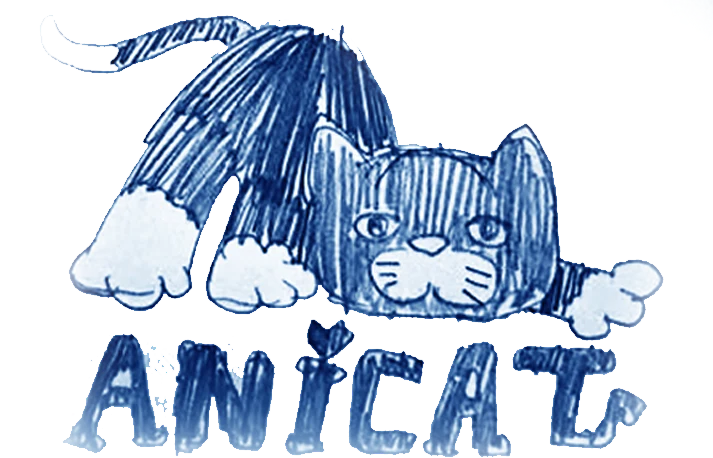
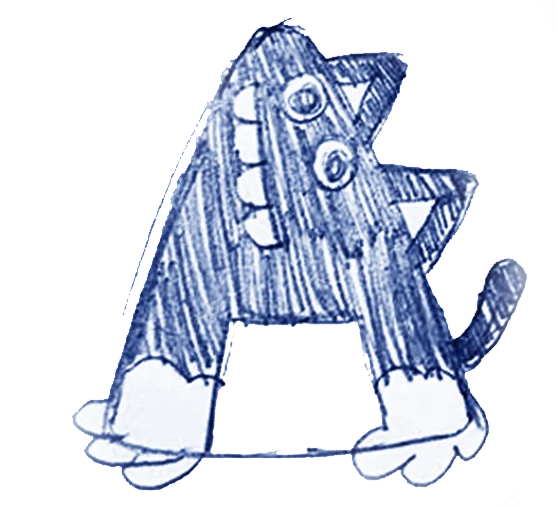
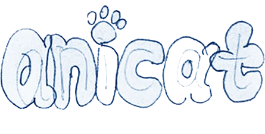
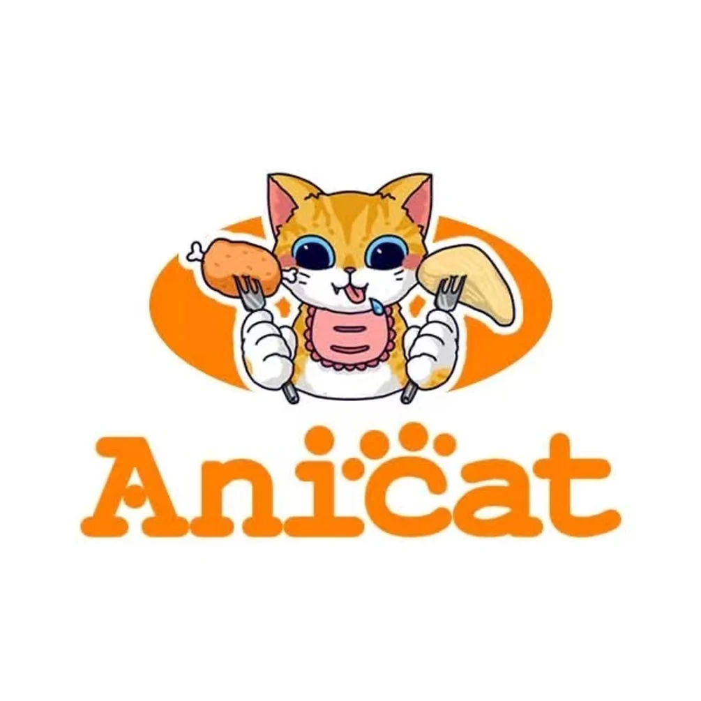
03 / MEET THE CHARACTERSTwo cats.
Two cats.
So much personality.
04 / PACKAGING SYSTEMPick your
Pick your
personality.
同一品牌语言，不同的色彩表达。
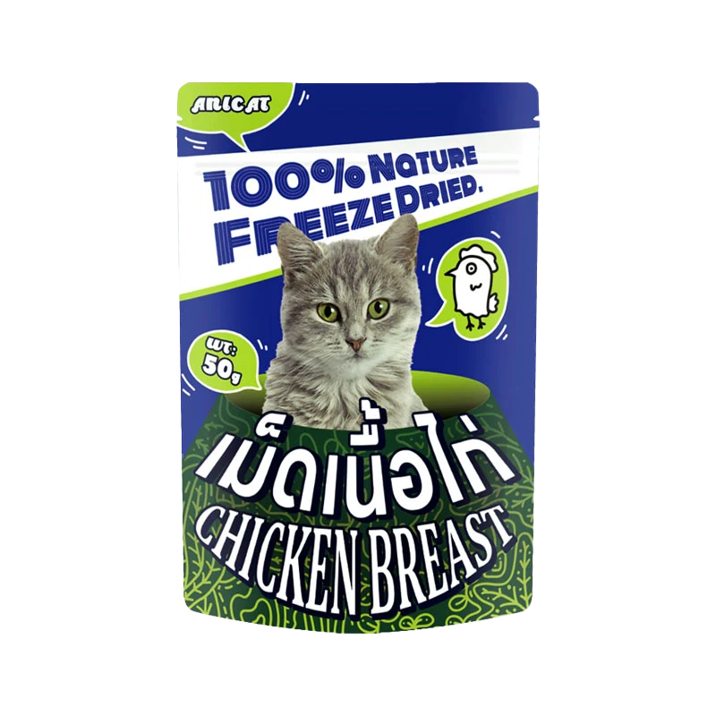
EXPLORE THE PACKAGING
Chicken Breast
05 / A WORLD TO PLAY IN小猫的生活，
小猫的生活，
不止一种场景。
拖动浏览 / Swipe to explore
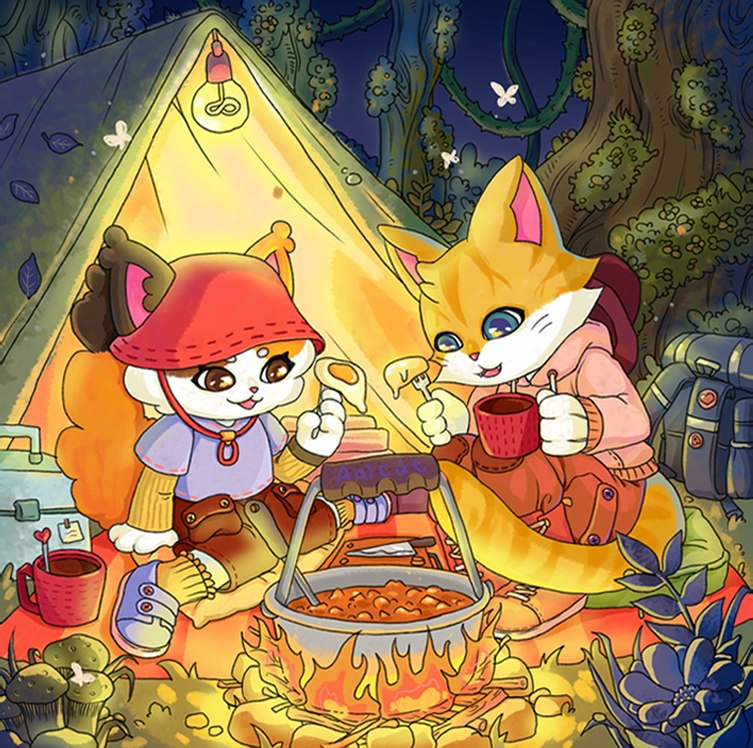
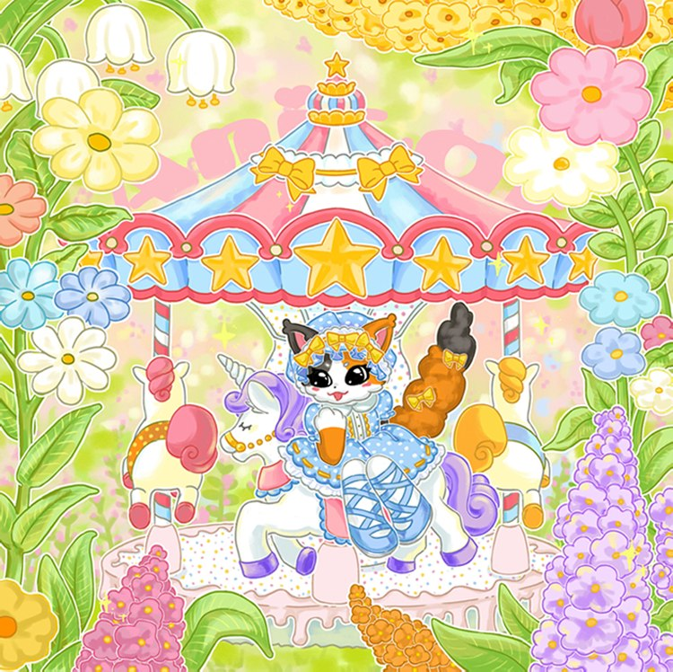
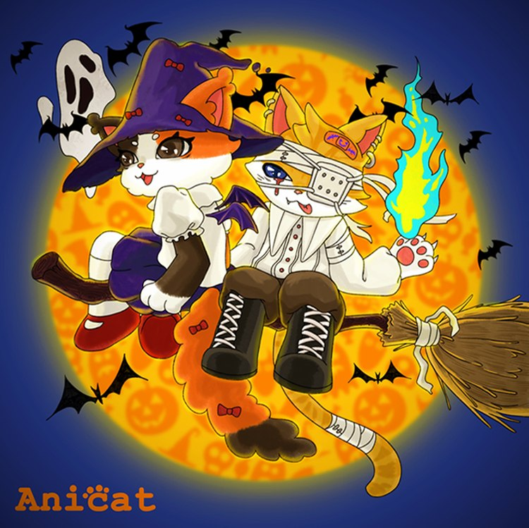
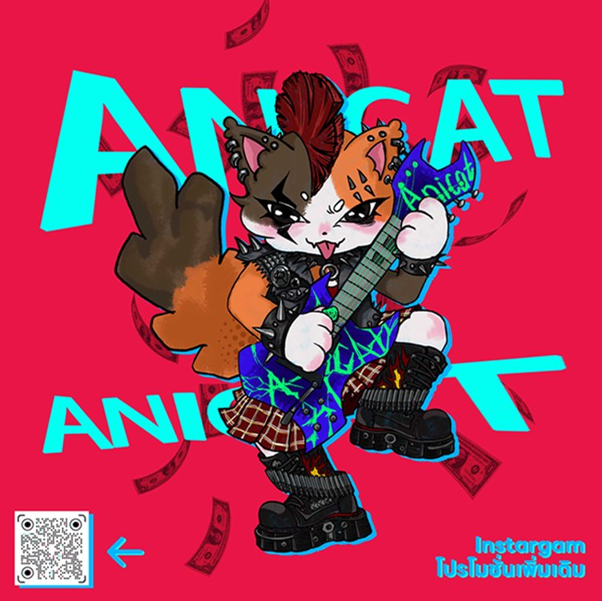
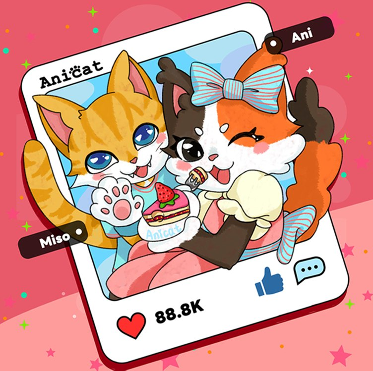
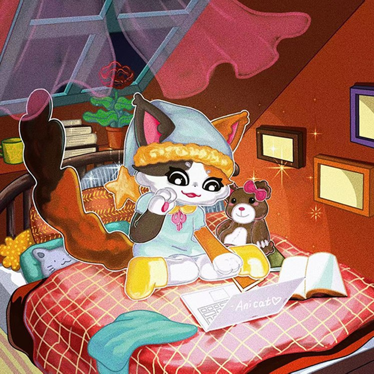
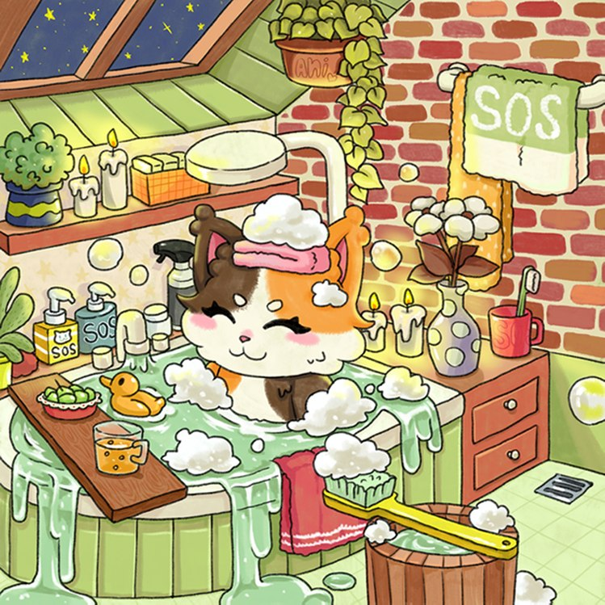
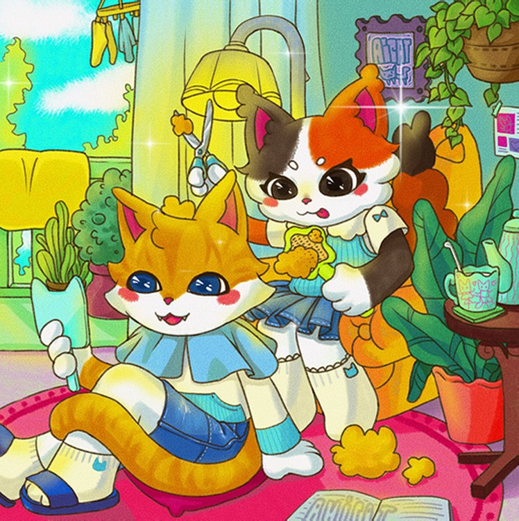
A little more ANI.
拖动贴纸，给它们找个位置。
07 / DIGITAL STOREFRONT从品牌世界，
从品牌世界，
走进购物日常。
Product cards → Store page → Brand in use
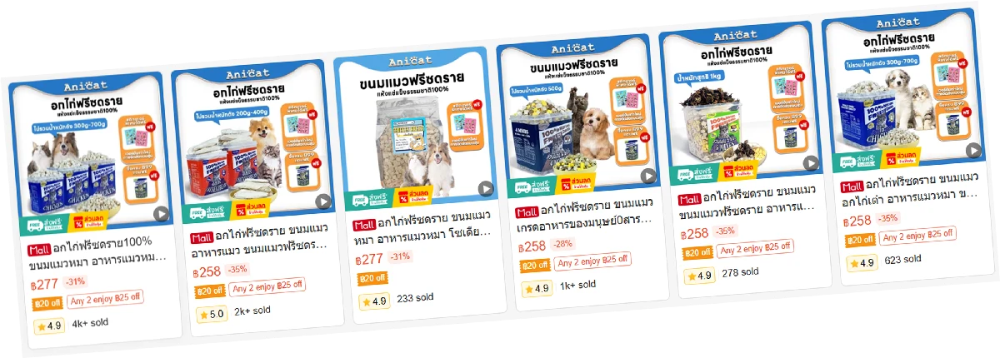
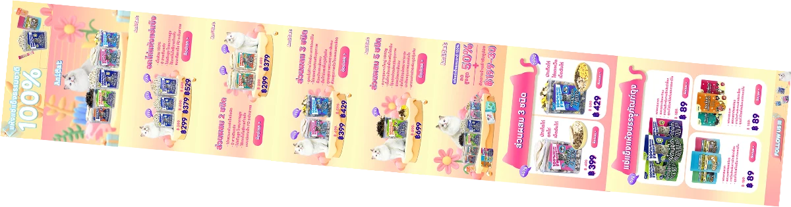
回到真实的生活。
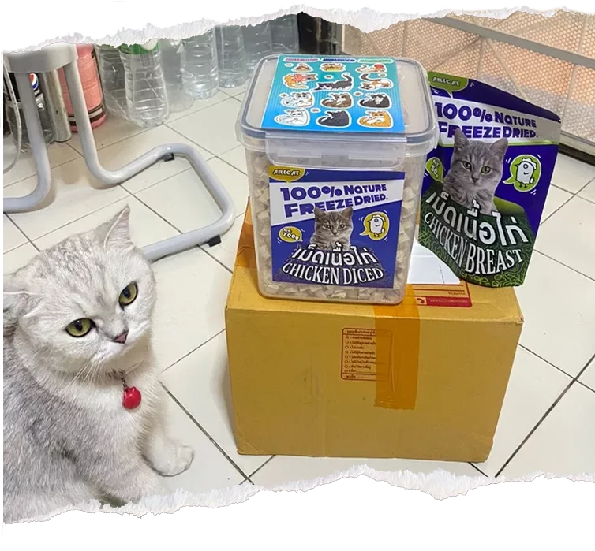
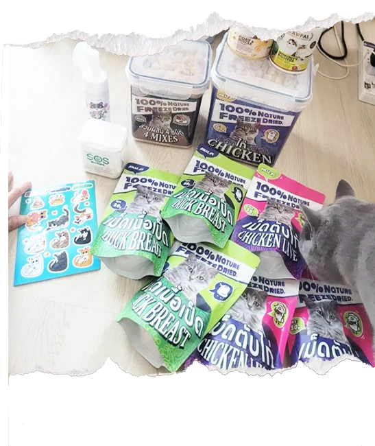